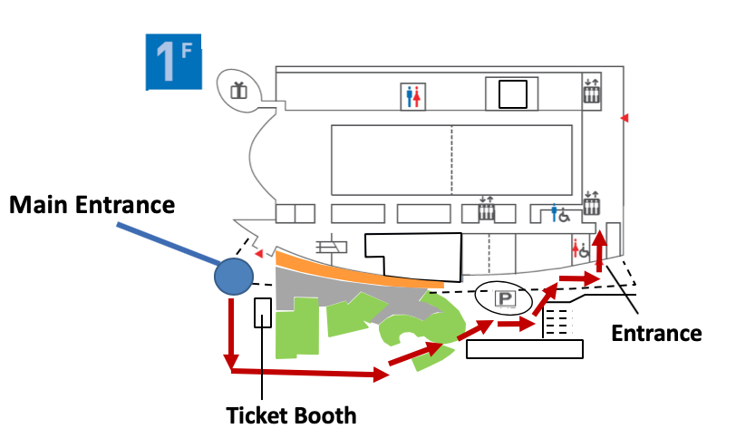
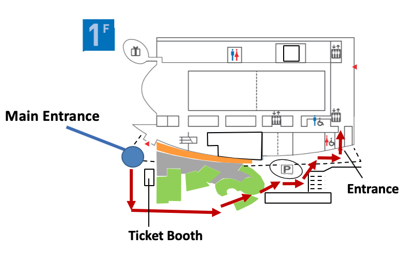

INLG 2019
Announcements from Local Organizing Committee
Announcements from Local Organizing Committee
For participants:
The main entrance is closed until 10am. Please follow the red arrows below to get to the back entrance. 
The main entrance is closed until 10am. Please follow the red arrows below to get to the back entrance. 
- Venue
- No food or drinks are allowed in the Miraikan Hall, where oral presentations of the main conference take place.
- You can ask staff members for SSID and password of WIFI.
- You are not allowed to put up a poster on the wall.
- Coin-operated locker on the first floor is available only until 17:00. Please take out your belongings before 17:00 out of the locker.
- Opening hours of Miraikan is 10:00–17:00. Main entrance on the 1st floor is closed at 17:00. When leaving after 17:00, please go out from the staff entrance next to Disaster Prevention Center.
- Main entrance on the 1st floor opens 10:00 a.m. When entering before 10:00 a.m., please enter through the staff entrance next to Disaster Prevention Center on the 1st floor and take the elevator.
- In the event of earthquake or fire, please take nearby emergency stairs and do not use elevators. On the 1st floor, you can’t go out from the main entrance because of a potential risk of broken glass. Please follow the Miraikan staff to evacuate the building.
- Program
- Proceedings are available at the registration desk for copying by USB memory. You can also download them.
- Light lunch will be served during the poster sessions on Oct 30 and 31. There will be NO lunch service on Oct 29 and Nov 1.
- There is an error in the hardcopy of the program. The following session is missing: